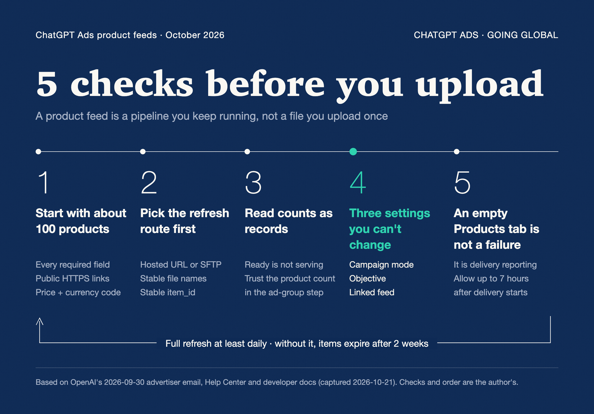

TL;DR
A product feed in ChatGPT Ads is a pipeline you keep running, not a file you upload once. Most of the work happens before the first ad shows.
Last week I covered the weekly performance email. This week is for retail teams with a catalog. On September 30 OpenAI emailed advertisers about bulk creation for product feed campaigns and a review status for products. This piece uses that email, OpenAI's Help Center and its developer docs, captured October 21. It uses no numbers from any ad account I work on.
If you already run ChatGPT Ads campaigns by hand, this tells you what changes when the catalog writes the ads. If you are getting ready, it gives you the order to do things in.
Two of the five items in the email are about product feeds.
The other three are conversion reporting beyond the campaign goal through the API, separate account, brand and legal names, and launch in Indonesia, Malaysia, the Philippines, Singapore, Thailand, Vietnam and Taiwan.
OpenAI's Help Center page on feed campaigns gives the context. They are "designed for retail advertisers with broad or frequently changing product catalogs." OpenAI says ads built from feeds "have been among the strongest-performing ads in our program to date." It does not publish numbers for that.
The ad is built from your data. Product ads show images, titles, stars, prices, sale prices and your brand. The ad template only lets you choose which image field to use. The title and description in your feed are your ad copy.
Three facts from OpenAI's docs explain it.
OpenAI publishes a seven-step setup. These five checks are mine, built from the Help Center and the developer docs. They are the points I would confirm before the first upload.

1. Start with about 100 products. OpenAI's feed spec says to "Start with a small sample (around 100 items)" and to include every required field in each sample row. Run QA on the first full snapshot before you automate. The common failures it lists are missing required fields, outdated field names and malformed values. Product pages and images must be public HTTPS links. In the CSV, a price carries its currency code, such as "79.99 USD".
2. Choose how the feed refreshes before you choose what goes in it. Ads Manager offers three imports: a CSV or TXT upload, a hosted URL, or SFTP. Because items expire, the Help Center recommends a hosted URL or automated SFTP. Keep file names stable and overwrite them on each update. OpenAI matches products by item_id, so keep IDs stable across uploads.
3. Read the counts as records, not products. The Feed Connection tooltip shows Ingested, Processed, Not approved and Ready. OpenAI says these "describe offer records rather than unique products," and subtracting them "may not give an accurate missing-product total." Not approved is a total, with no item list and no reasons. Approval also does not mean an item is ready to serve. During setup, the number to trust is the product count in the ad-group step: how many uploaded products are ready and pass your filters. Through the API, upload history adds diagnostics by field, such as an invalid price value and the number of rows affected.
4. Decide the three settings you cannot change later. From the developer guide: "The campaign's mode, objective, and linked feed cannot be changed after creation." Pick the feed, the goal and the campaign type first. Three more limits sit next to these.
5. Do not read an empty Products tab as a failed upload. The Help Center calls the Products tab "a reporting view." A product appears there only after it has delivery data. After delivery starts, allow up to seven hours for the first rows. The September 30 email says the tab now shows review status as well, while the Help Center page captured October 21 still describes it as delivery reporting. Until the two line up, check the ad-group product count first. If products are still missing after the campaign has delivered, contact support with your ad account ID, feed ID, campaign and ad-group names, date range and time zone, example product IDs and a screenshot of the Products tab.
A feed does not put your products into ChatGPT's answers. During the beta, feed products are eligible for ads only. OpenAI says it may offer organic use later. It has not given a date.
Ready is not serving. OpenAI's docs say this twice in different words: approval does not mean an item is ready to serve, and matching a filter does not mean a product will get impressions. Budget, bids, reviews and stock still apply.
"Strongest-performing" is OpenAI's claim, not a benchmark. It has not published the numbers behind it. Judge feed campaigns on your own conversion data, measured the way the last two pieces describe. That is my reading, not OpenAI's.
Already spending. Start this week:
Getting ready. Check that the legal entity that will advertise and be billed is based in a country where self-serve Ads Manager is available. Then clean the catalog: titles and descriptions become ad copy, and prices and stock must be current.
Watching. Nothing to do yet. If you already send a product feed to another ads platform, note that OpenAI's product file schema uses its own field names, such as item_id, image_url and is_ads_eligible. Map your feed to it before the first sample.
Export 100 products from one category and check them against OpenAI's product file schema: public HTTPS page and image links, a price with a currency code, and an item ID that will not change.
A question for the comments: which field in your catalog needs the most cleanup before it can work as ad copy, titles, descriptions or images? Tell me your category and I will compare what different categories struggle with in a later piece.
A campaign type in Ads Manager that builds ads from an uploaded product catalog. The ads show product images, titles, stars, prices, sale prices and the brand. OpenAI designed them for retail advertisers with broad or frequently changing catalogs.
No. During the beta, feed products are eligible for ads only. OpenAI says it may offer organic use in the future.
At least daily, as a full snapshot. Items in a feed expire after two weeks, so OpenAI recommends a hosted URL or automated SFTP over manual CSV uploads.
It is a reporting view. Products appear only after they have delivery data, up to seven hours after delivery begins. Use the product count in the ad-group setup to see how many products are ready.
No. A campaign's mode, objective and linked feed cannot be changed after creation. Geographic targeting for new feed campaigns is country-level only.
In Ads Manager, go to Campaigns, then Bulk uploads, choose Bulk sheet and download the Product feed template. Ad templates are generated automatically.
Stan Lu · ChatGPT Ads · Going Global. I write explainers on official ChatGPT Ads updates, with sources split into OpenAI, coverage, and my own reading.
Series: ChatGPT Ads Update Explainer · Previous: ChatGPT Ads holiday session: campaign creation now starts from a URL · 中文版
Published 2026-11-05 · Last updated: 2026-11-05